Inhalt
- Einrichten
- Zweites Elternteil
- Heute-Übersicht
- Essen eintragen
- Nachtragen & vorplanen
- Schätzessen
- Portionsgerichte
- Ändern, löschen, kopieren
- Lebensmittel
- Familie & Limit
- Gut zu wissen
1Einrichten
Einmalig, nur ein Elternteil.
- Konto anlegen: Name, E-Mail, Passwort.
- Name des Kindes und Tageslimit Eiweiß (g) eingeben.
- Kind anlegen, fertig.
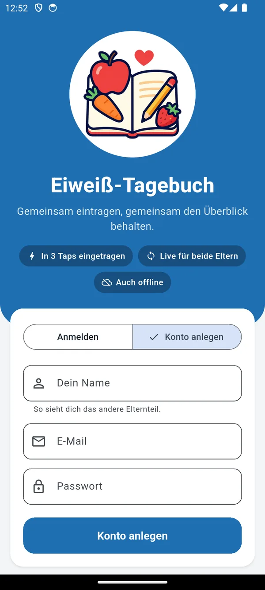
Konto anlegen
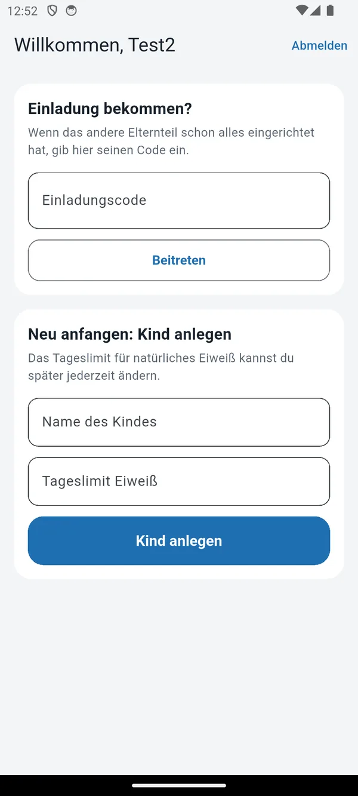
Kind anlegen
2Zweites Elternteil
Beide tragen ins selbe Tagebuch ein und sehen alles live.
- A: Familie → Einladungscode erstellen → Code weitergeben.
- B: eigenes Konto anlegen, Code bei Einladung bekommen? eingeben → Beitreten.
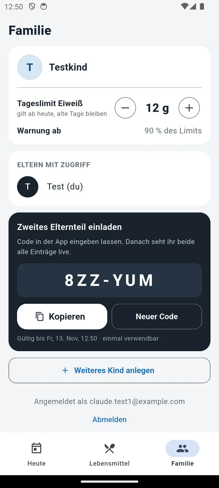
A: Code erstellen
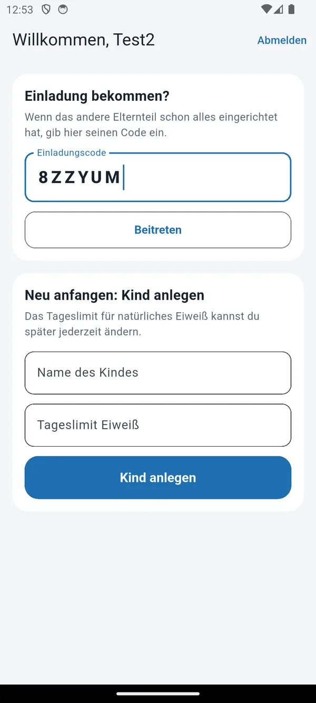
B: Code eingeben
Der Code gilt 48 Stunden und nur einmal.
3Heute-Übersicht
Der Startbildschirm.
- Ring: gegessen von Limit, ab 90 % orange.
- Noch übrig: was heute noch geht.
- Einträge nach Mahlzeit, mit Namen, wer eingetragen hat.
- ‹ › Tage blättern, aufs Datum tippen = zurück zu heute.
- ● Live = verbunden. Offline = wird später übertragen.
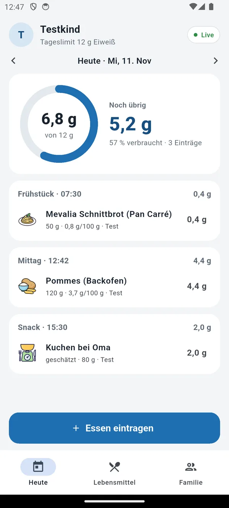
6,8 von 12 g gegessen
4Essen eintragen
Meist drei Taps.
- + Essen eintragen
- Kategorie antippen oder oben suchen.
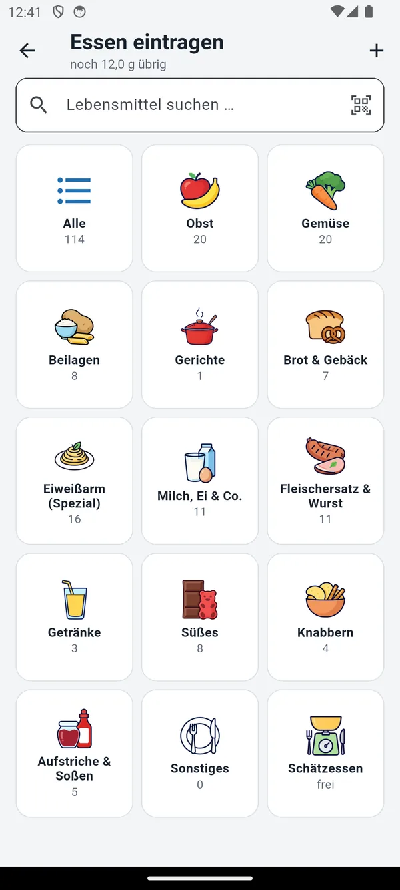
Kategorien
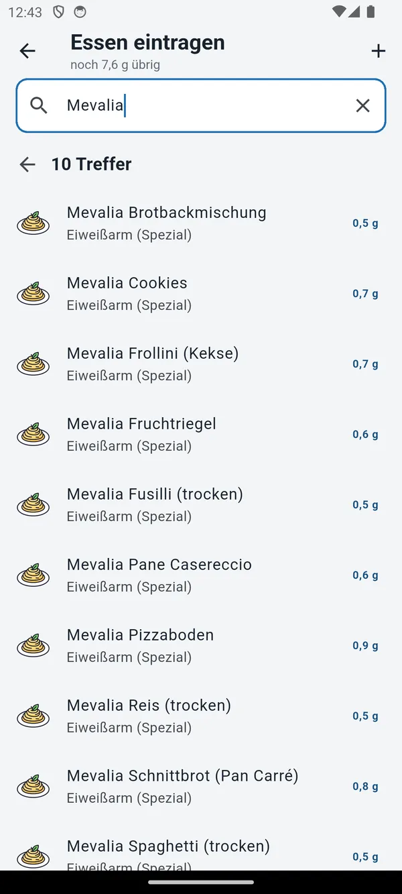
Suche
- Lebensmittel antippen. Menge per Schnelltaste, Schieber oder Eingabe. Bei Spannen (z. B. 3,5–3,8 g) den Wert wählen.
- ✓ eintragen
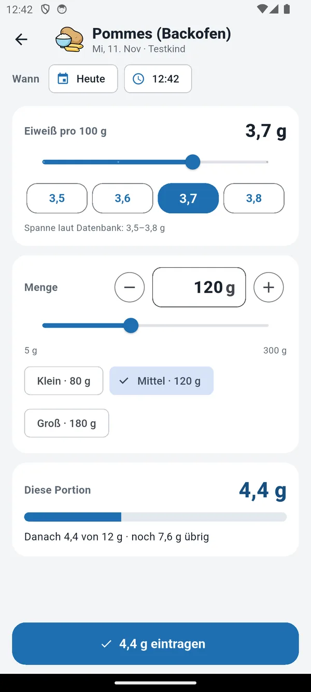
Unten: was danach übrig bleibt
- Favoriten ★ und Häufiges stehen oben.
- Die Mahlzeit ergibt sich aus der Uhrzeit.
- Barcode: Symbol im Suchfeld. Unbekannte Produkte werden bei Open Food Facts nachgeschlagen.
5Nachtragen & vorplanen
Oben bei Wann Tag und Uhrzeit antippen und ändern, z. B. das Mittagessen abends nachtragen.
Geht bis zu 7 Tage im Voraus. Mit › in der Übersicht seht ihr den nächsten Tag.
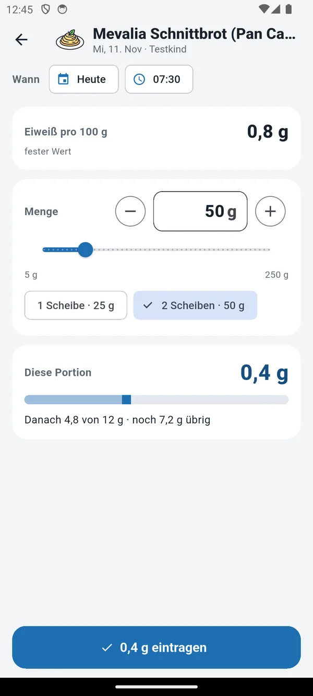
Uhrzeit 07:30
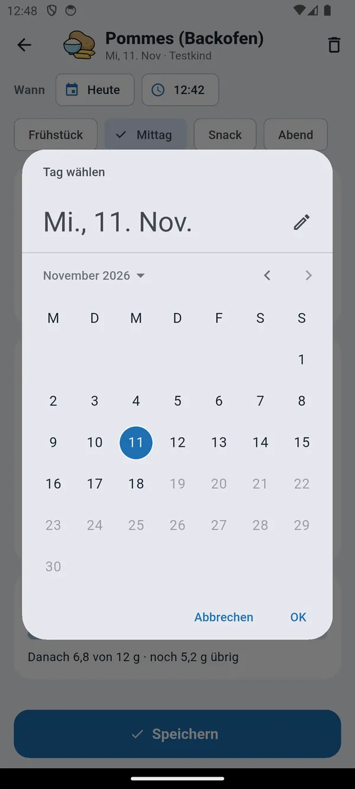
Tag wählen
6Schätzessen
Für Unbekanntes, z. B. Kuchen bei Oma.
- Kachel Schätzessen.
- Optional: was es war.
- Eiweiß schätzen (0–10 g).
- Optional: Menge als Notiz, zählt nicht mit.
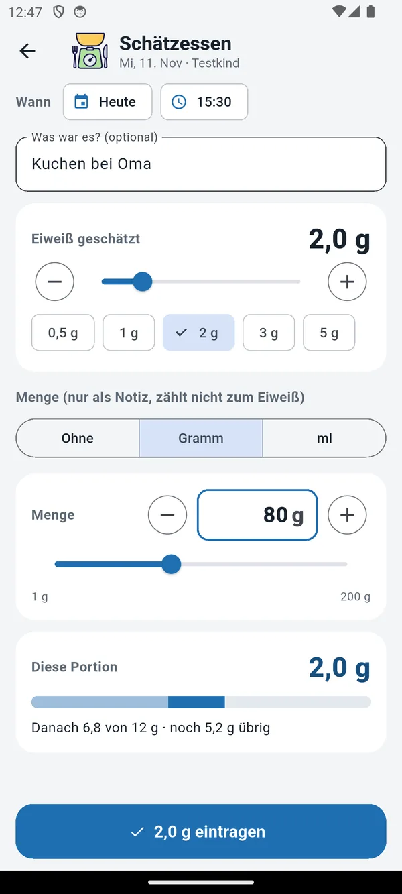
Geschätzt 2 g
7Portionsgerichte
Für vorab ausgerechnete Gerichte, z. B. Müsli mit Milch = 1 g pro Portion.
Beim Eintragen nur die Anzahl wählen. Anlegen: Lebensmittel mit Einheit Portion.
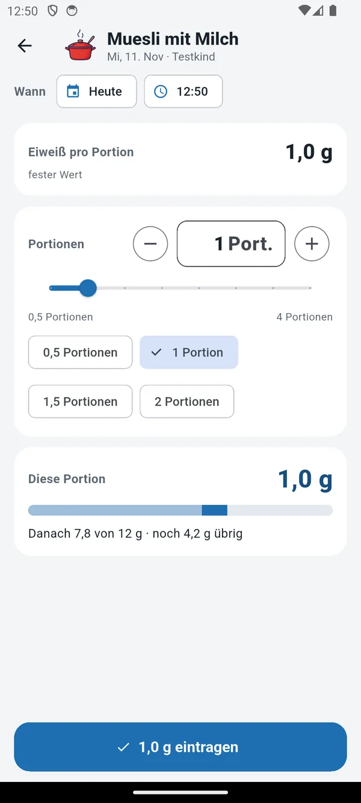
1 Portion = 1 g
8Ändern, löschen, kopieren
- Antippen: bearbeiten, auch Mahlzeit und Tag.
- ← Nach links wischen: löschen.
- → Nach rechts wischen: auf morgen kopieren, z. B. das übliche Frühstück.
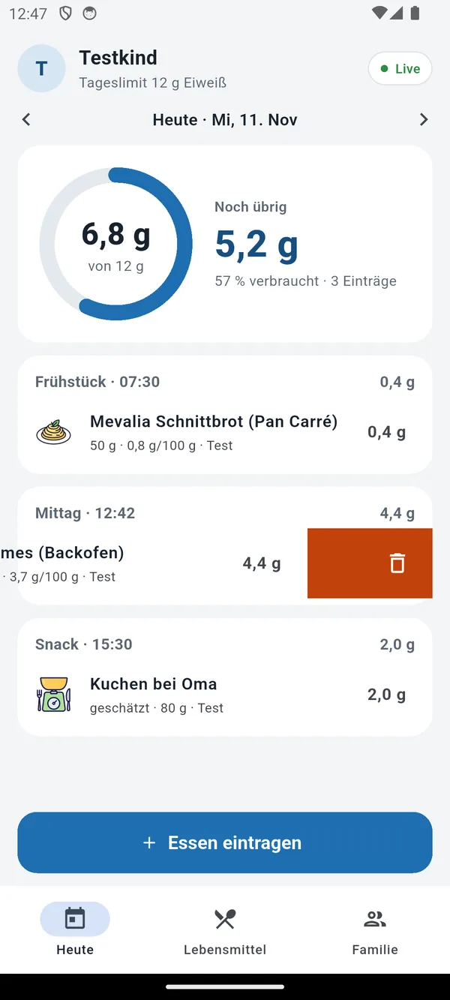
← löschen
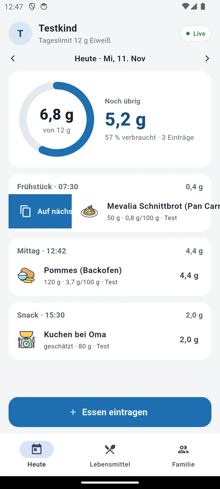
→ kopieren
Vorher kommt immer eine Rückfrage, danach gibt es noch Rückgängig.
9Lebensmittel
Rund 110 sind schon drin. Gilt für die ganze Familie.
- ★ = Favorit, steht beim Eintragen oben.
- + Neu oder antippen zum Bearbeiten.
- Per Barcode oder Foto der Nährwerttabelle automatisch ausfüllen.
- Eiweiß als festen Wert oder Spanne, eigene Portionsgrößen als Schnelltasten.
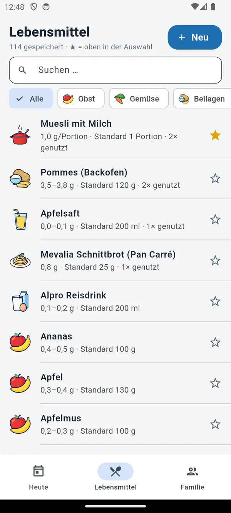
Liste
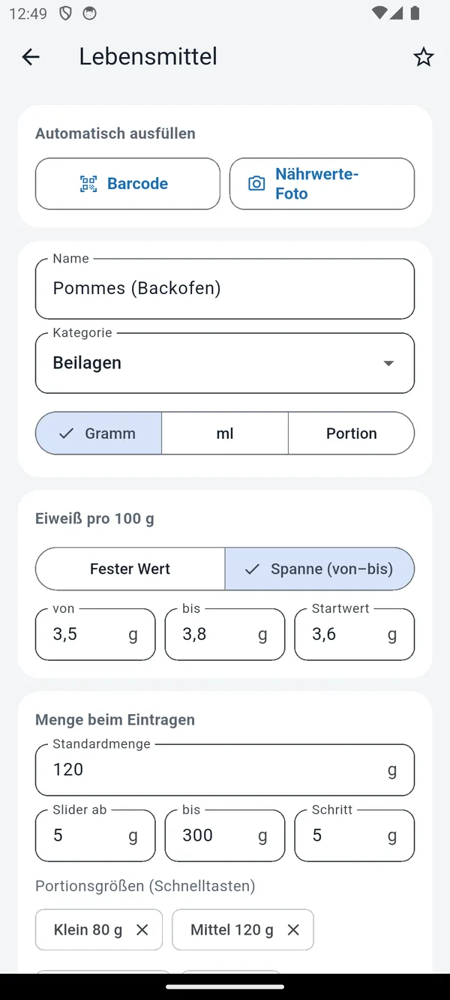
Bearbeiten
10Familie & Limit
- Tageslimit mit −/+ ändern. Gilt ab heute, alte Tage bleiben.
- Eltern sehen, einladen, weiteres Kind anlegen.
- Mehrere Kinder: in der Übersicht oben auf den Namen tippen.
11Gut zu wissen
- Was zählt?
- Nur natürliches Eiweiß. Keine Spezialnahrung.
- Wann beginnt ein neuer Tag?
- Um Mitternacht.
- Ohne Internet?
- Weiter eintragen, wird später übertragen.
- Woher kommen die Werte?
- Herstellerangaben bzw. Durchschnitt. Im Zweifel gilt die Packung.